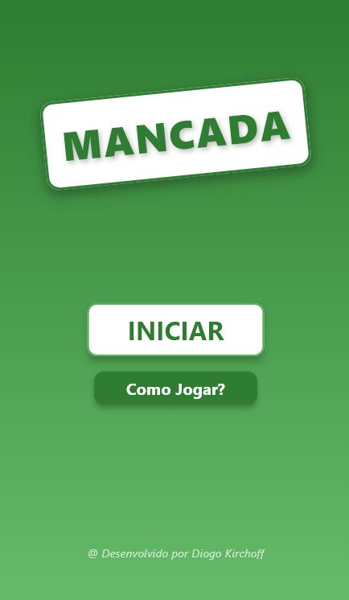
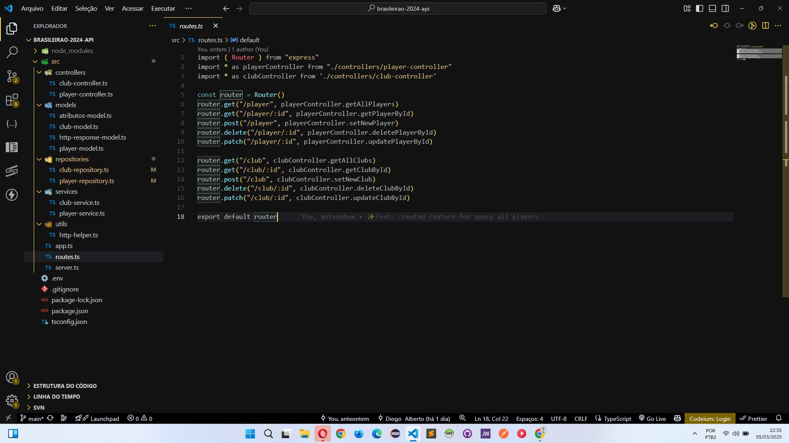
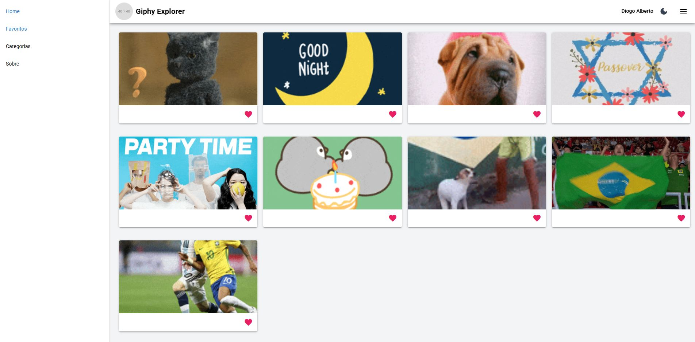
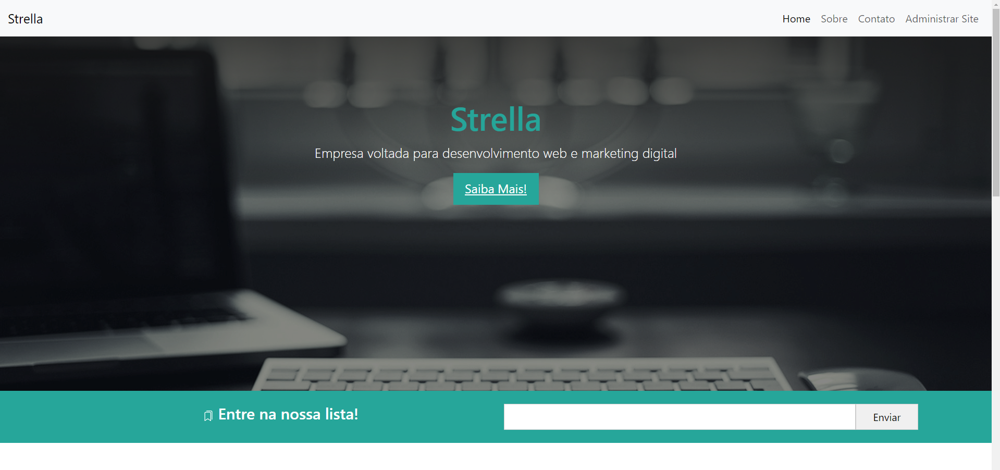
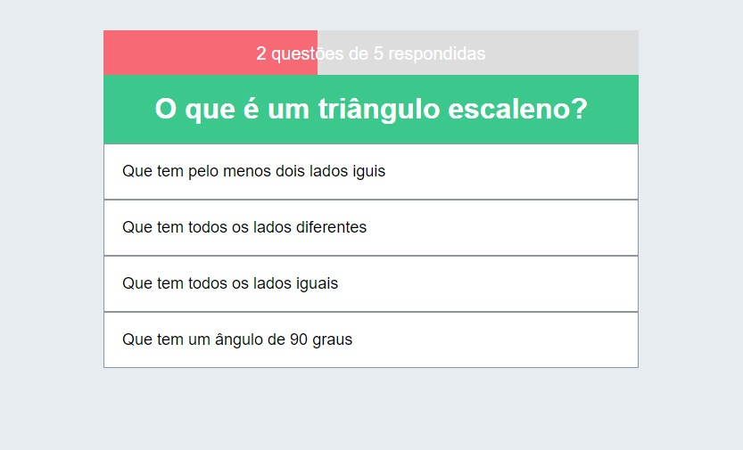

Projetos

Aplicativo Mancada
Esse aplicativo serve para registrar as pontuações do jogo Mancada - popular Buraco.
Com ele, pode-se registrar os nomes dos jogadores e suas respectivas pontuações, bem como
aprender suas regras e ficar informado sobre a rodada e o placar.
Tecnologias utilizadas: Flutter e Dart.

API Times Brasileiros
API para os 20 melhores times do Sofascore (https://lnkd.in/dReyyuf3) da temporada de 2024.
Além disso, conta com os 10 jogadores com a pontuação mais alta. Desenhada a arquitetura da api
estruturando em routes, controllers, services, repositories e models.
Desenvolvidas as features em ambos os sentidos, partindo dos routes em direção aos repositories,
e vice-versa. Incrementadas também algumas opções para a api utilizar o CORS, definindo quem pode
fazer requests, e limitando também os tipos de requests possíveis.
Tecnologias utilizadas: Node.JS, Express e TypeScript.

GIFS
API de GIFS que permite procurar GIFS por palavra-chave, e favoritar, guardando na Session
os itens favoritados.
Tecnologias utilizadas: Vue.JS e Quasar

Aplicação Web Streaming de Áudio
Sistema web de streaming de áudio em tempo real, com interface totalmente intuitiva e responsiva.
Essa aplicação permite fazer upload de músicas, reproduzir, pausar e passar para a próxima. Além disso,
conta com feature de autenticação de login.
Tecnologias utilizadas: Vue.JS e Firebase

Análise de Dados de Planilha CSV/Excel
Análise de dados com algoritmos avançados para realizar previsões de dados usando inteligência artificial.
Ao fornecer uma base de dados em formato csv ou excel, é possível com base nisso, prever dados futuros.
Tecnologias utilizadas: Python

Site Institucional
Site institucional moderno, com design profissional e responsivo. Possui um painel gerencial,
onde é possível cadastrar e editar postagens, bem como imagem de perfil e criação de menus.
Tecnologias utilizadas: PHP, JavaScript, HTML5 e CSS3

Quiz
Quiz interativo com perguntas dinâmicas e resultados em tempo real. Ao responder uma pergunta
corretamente, o usuário recebe um feedback na cor verde, e ao contrário, na cor vermelha.
Tecnologias utilizadas: Vue.JS